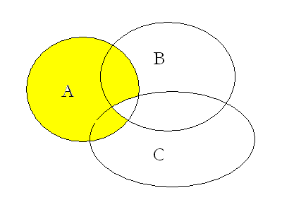
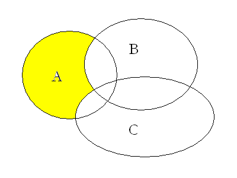

| Choisissez votre langue ! | Choose your language ! |
Si A,B, et C sont 3 , les lois dites de 'De Morgan' peuvent s'énoncer ainsi:
If A, B, and C are 3 , the so-called laws of 'De Morgan' can be stated as follows:

L'image suivante vous permet de visualiser la seconde loi :
The following image allows you to visualize the second law:

Montrons par exemple la première:
La seconde formule se démontre de manière analogue.
Let us show for example the first:
The second formula is demonstrated in a similar way.
|
Création Gilles Dubois
Created by Gilles Dubois
|
Janvier 2022
January 2022
|
Version mobile Jquery
Mobile Jquery version
|